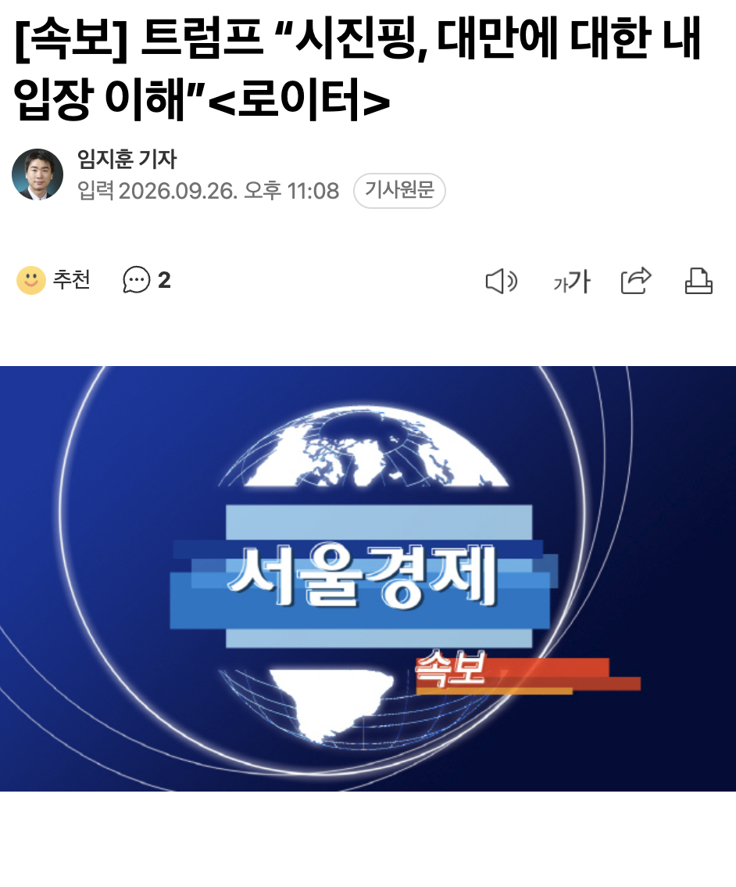

🇺🇸 속보] 트럼프 “시진핑, 대만에 대한 내 입장 이해” 🇨🇳
댓글
워낙 헛소리 많이해서.. 시진핑도 트럼프 말 안 믿을거 같은데
트럼프입장이 대만 버리자는거 아님?
중국과의 전쟁을 나는 원하지 않는다.
만약 , 일어난다면
그건 그들의 일이다.
비슷한말 한것같음
트럼프가 내란할거라 대만 눈감아줄테니 내란 넘어가달라한건가
그 입장이 먼디?
TSMC 옮길 테니 그때 먹으라고 했겠지
저새끼 핑핑이가 대만 포기하라고 하니까 어버버 거리며 대처 이상하게 한거 아니었어?
그새끼가 이해할꺼는 하나의중국 뿐일텐데 트럼핑 이새끼야
일본,대만 ㅈ됫네 ㅋㅋㅋㅋㅋㅋㅋㅋ
우리도 좆 됐어
대만 제끼고 한국도 거기에 빨려 들어가게 만든 다음 반도체 다 먹어버리려는 속셈 아닐까?
???: tsmc만 주고 대만 땅은 너희가 먹어~
솔직히 TSMC만 챙기고 대만 주는것도
미국 중국 입장에선 나쁘지 않은 거래같긴 해
트럼프, 동맹인 중국과 함께 대만을 공격하기로 합의
트럼프 저격 실패한 븅신 생각나네
하 그걸 못맞추냐
아직 너무 앞선 이야기 같기도 하지만 트럼프가 중국이 대만 먹는거 용인 하면 일본이나 우리나 방법이 있나.
핑핑이도 느낄 거 같다. 양안전쟁 할거면 트럼프 때 무조건 해야 한다고 ... ㄷㄷ
타이밍 상 트럼프 임기 1년 쯤 남았을때 터트리면 미국도 선거때문에 아무것도 못할 거 같은데
문장만 보면 겁나 파괴적이네 ㅋㅋㅋ
???